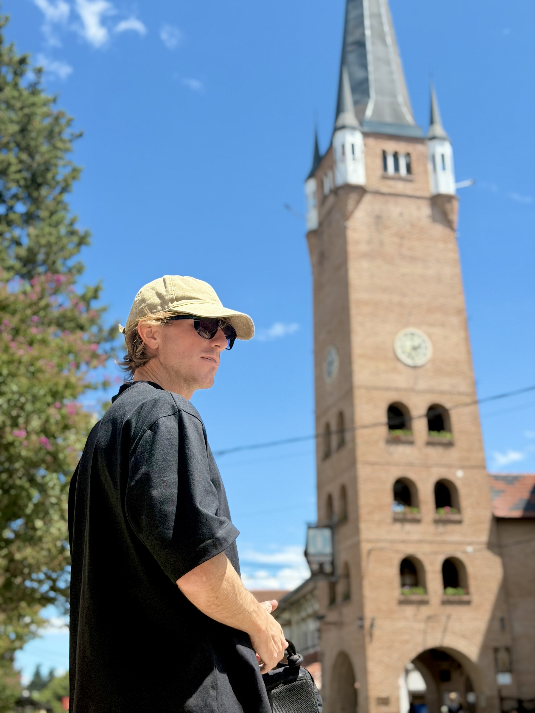
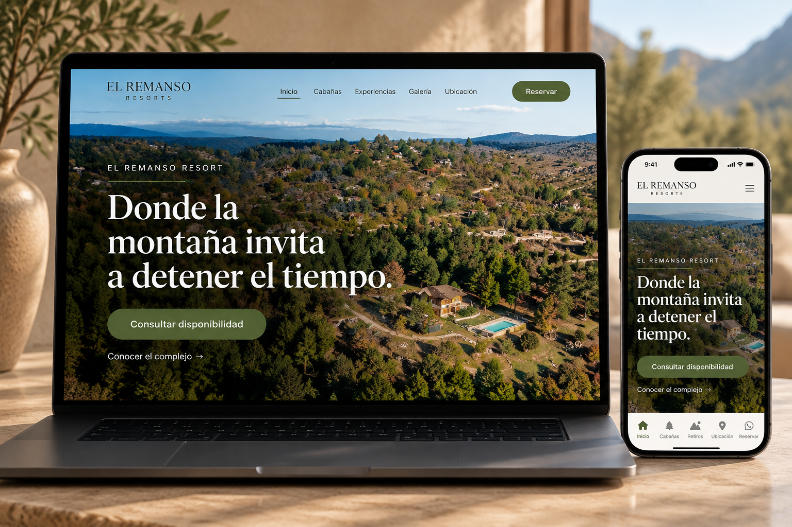
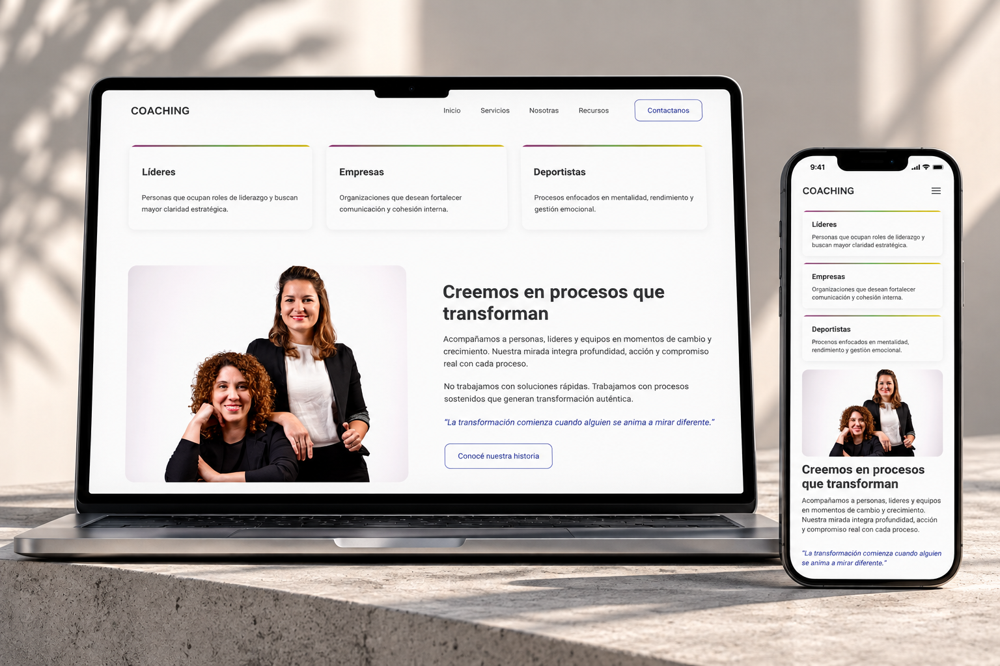
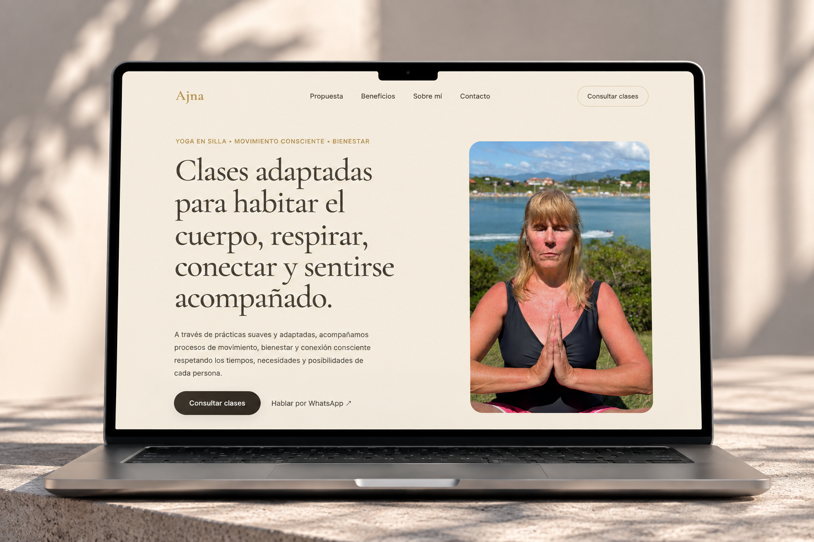
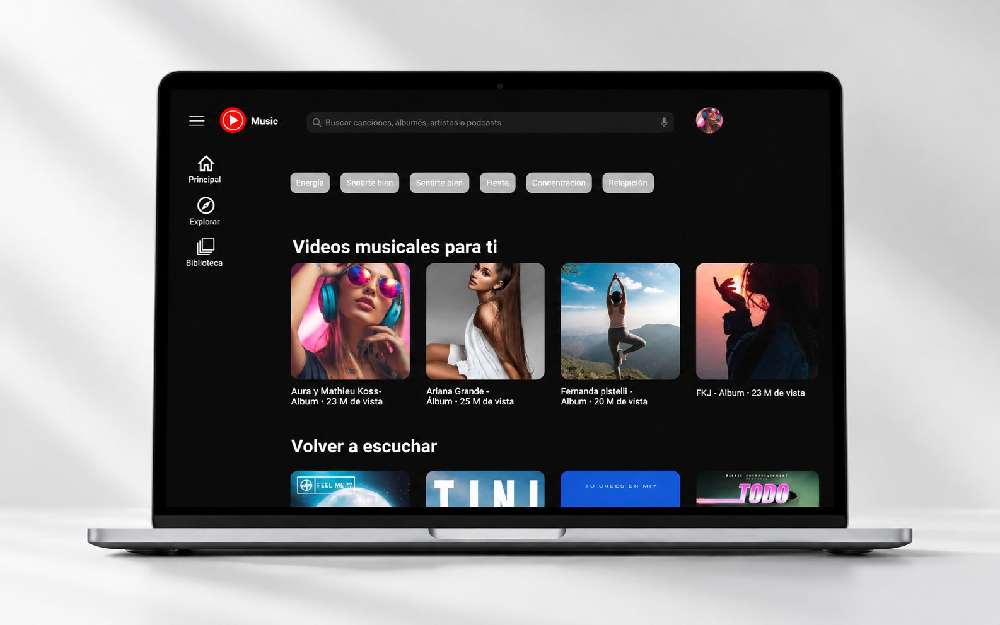
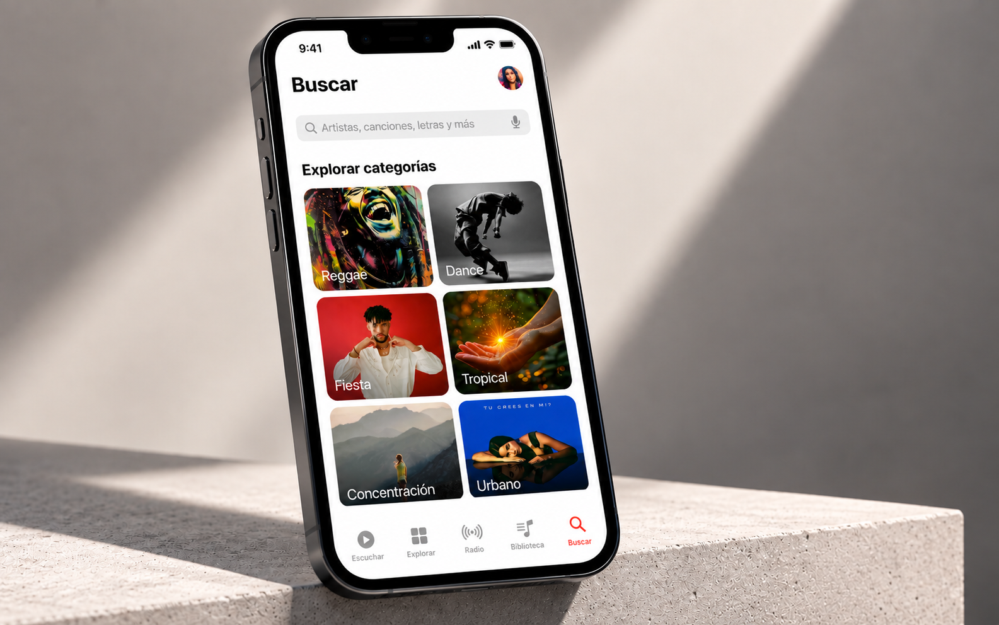

Si estás empezando
Tenés una idea o un negocio, pero todavía no sabés cómo llevarlo a una presencia digital clara.
Puedo ayudarte a definir la estructura, organizar el contenido y transformar la idea en una experiencia digital concreta.
Trabajo desde la estrategia, el diseño UX/UI y el desarrollo front-end para convertir una idea en una experiencia digital que tenga sentido, se vea bien y funcione.

A veces el problema no está en lo que haces, sino en cómo lo estás mostrando.
Tenés una buena propuesta, pero cuesta explicarla.
Tenés presencia en redes, pero la información está dispersa.
Tenés una web, pero no termina de acompañar al usuario.
Conseguís clientes, pero dependés demasiado de las recomendaciones.
Simplemente no sabés por dónde empezar.
No todos los proyectos necesitan lo mismo. Partimos de dónde estás hoy y construimos lo que necesitás.
Tenés una idea o un negocio, pero todavía no sabés cómo llevarlo a una presencia digital clara.
Puedo ayudarte a definir la estructura, organizar el contenido y transformar la idea en una experiencia digital concreta.
Tenés una web, pero sentís que podría comunicar mejor lo que hacés.
Puedo ayudarte a revisar la experiencia, ordenar la información y mejorar la forma en que las personas recorren tu sitio.
Ya tenés una propuesta, pero necesitás una forma más clara de convertir visitas en oportunidades.
Puedo ayudarte a diseñar una experiencia orientada a objetivos y conectarla con acciones de captación.
Tenés el diseño, pero necesitás convertirlo en una web funcional.
Puedo ayudarte a desarrollar la interfaz y dejarla preparada para publicarse.
Cada proyecto parte de una necesidad diferente. Por eso adapto el proceso a lo que realmente necesita el negocio, desde la definición inicial hasta la puesta en marcha y optimización.
Primero entendemos dónde estás, qué ofrecés, a quién querés llegar y qué necesitás conseguir.
Ordenamos la información y definimos qué necesita realmente el proyecto: estructura, contenido, recorrido y objetivos.
Transformamos esas decisiones en una experiencia visual y funcional: UX, UI, arquitectura e interfaz.
Llevamos el diseño a una experiencia real mediante desarrollo web y dejamos el proyecto preparado para publicarse.
Cuando el proyecto lo necesita, conectamos la experiencia con acciones de captación para llevar personas hacia ella.
Observamos qué sucede, aprendemos de los resultados y hacemos ajustes cuando sea necesario.
Algunos proyectos en los que pude llevar estas ideas a la práctica.

Web estratégica · UX/UI · Desarrollo
Un complejo de cabañas en las sierras de Córdoba que ya contaba con una identidad y una fuerte presencia visual, pero necesitaba centralizar su información y transmitir mejor la experiencia del lugar.
Ver proyecto →
UX/UI · Web responsive · Arquitectura
Una web responsive pensada para ordenar la propuesta de servicios, comunicar el enfoque de trabajo y facilitar el recorrido de las personas interesadas.
Ver proyecto →
Identidad · Web · Activación
Una presencia digital pensada para comunicar una propuesta de bienestar de forma clara, cercana y coherente.
Ver proyecto →
UX/UI · Rediseño Desktop · Proyecto académico · 2024
Un rediseño de la experiencia desktop de YouTube Music, desarrollado durante mi formación en UX/UI, con foco en navegación, jerarquía visual y personalización.
Ver proyecto →
UX/UI · Rediseño Mobile · Proyecto académico
Rediseño de la experiencia mobile de Apple Music, desarrollado durante mi formación en UX/UI, con foco en navegación, descubrimiento de contenido y experiencia de reproducción.
Ver proyecto →Soy Lucas Boero, diseñador UX/UI y desarrollador web. Me interesa trabajar en proyectos donde el desafío no es solamente crear una web, sino entender qué se necesita comunicar, cómo debería funcionar y qué experiencia queremos ofrecer.
Mi formación en UX/UI me llevó a interesarme especialmente por la relación entre estrategia, diseño y desarrollo. Por eso intento involucrarme en todo el proceso: desde desarrollar una idea y definir una estructura, hasta diseñar una interfaz y llevarla a una experiencia web funcional.
Con el tiempo fui entendiendo que diseñar también implica tomar decisiones, probarlas, detectar lo que no funciona y aprender de cada proyecto.
Y, sobre todo, diseñar para quien usa.
Una interfaz no se diseña solamente para quien tiene un proyecto. Se diseña para las personas que van a utilizarla.
Por eso, detrás de cada decisión intento preguntarme si la experiencia resulta clara, si facilita el recorrido y si realmente ayuda a la persona a conseguir lo que necesita.
Si tenés una idea, una web que necesita una vuelta más o simplemente no sabés por dónde empezar, podemos conversar y ver qué necesitás realmente.
Hablemos de tu proyecto →